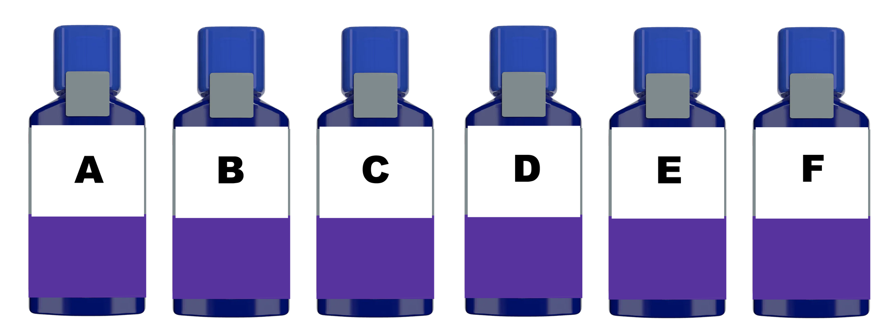
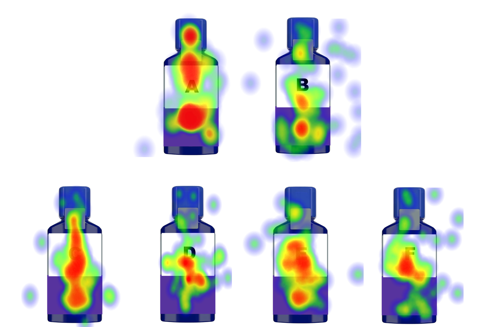
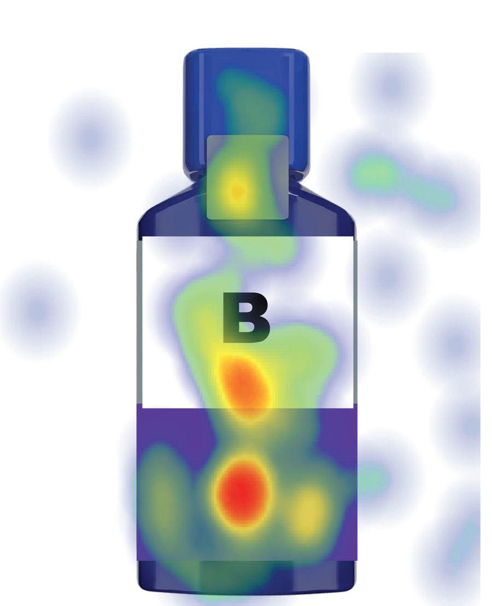
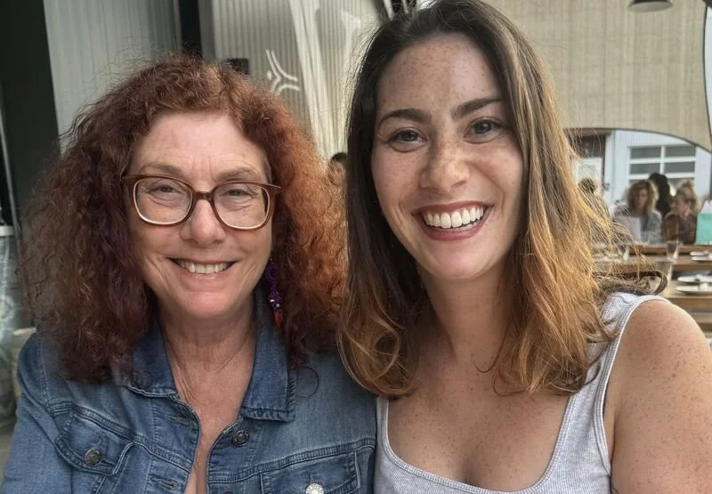

Redesigning product for evening use
// consumer insights data analyst //
Finding the strongest name for a new night time sinus product
Challenge: Stakeholders of a well-known daytime sinus product want to launch a nighttime version, however, the current product name and design do not resonate with consumers.
Solution: Rename the new nighttime product and simplify the design so that it is relevant to consumer needs.
How do you ensure consumers are engaged with the new nighttime product?
recruit participants
We recruited 182 consumers and had them compare six different product names on new packaging designs.

a/b testing
Using AI-driven data analytics (Hotjar), we generated heatmaps of what consumers liked and disliked about the product name and design.

Do consumers view the new nighttime brand as a stronger product?
insights
Concept B was the highest ranked for
- purchase interest,
- believable claims,
- and relevance for use
Concept B was significantly preferred for nighttime use, addressing consumer needs for
- multiple symptom relief,
- quick-working,
- and high quality

outcomes
Recommended that stakeholders proceed with Concept B, as it meets consumer needs and has the potential to generate higher sales.

*Note: Product names have been changed as this is under NDA